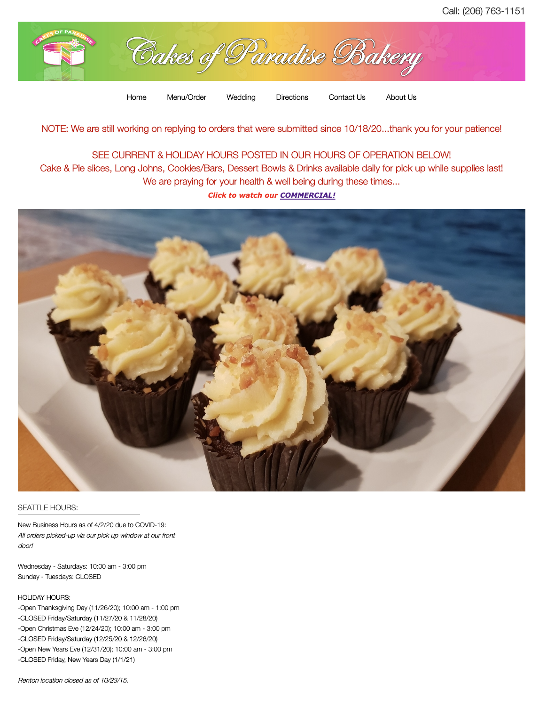
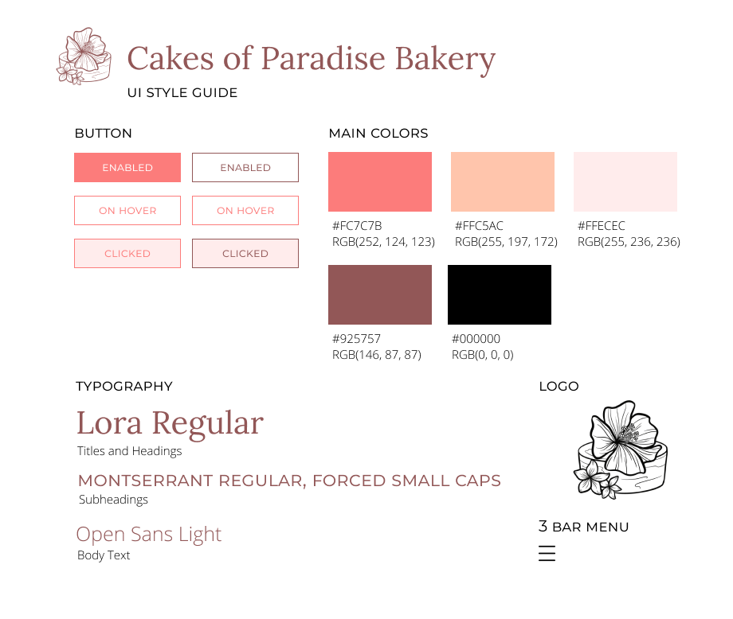
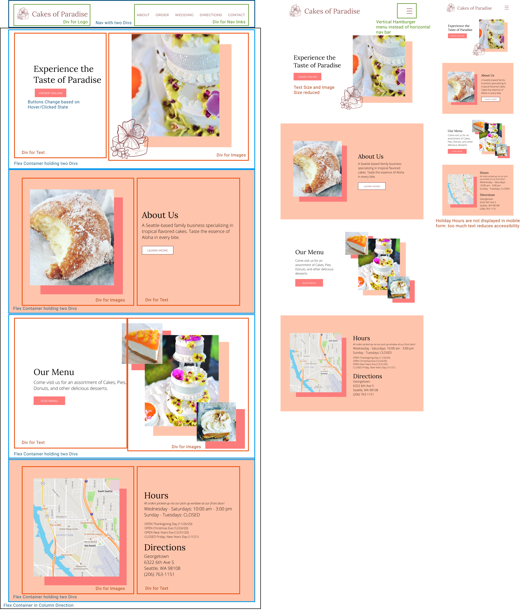

Cakes of Paradise
A Responsive Redesign
Introduction
This project is focused on designing and building a new responsive webpage for an existing website. Though this project, I worked on identifying and analyzing flaws in the existing webpage in terms of usability, learnability, memorability, and accessibility. With the problems identified, I then created low and high fidelity prototypes and a visual guide, and built a responsive webpage.
The website I chose to redesign was the Cakes of Paradise Bakery website, a Hawaiian bakery in the Seattle Area.
The Original Site
Identifying Issues
In looking at the current Cakes of Paradise Bakery website, I focused on the homepage in particular. To identify the current issues with the website, I looked at three areas:
- usability
- learnability
- memorabiilty
Usability
- Needs to scroll down to see store hours
- Chunk of text at the top covers different information, but has no clear hierarchy
- Not responsive; text size does not change with screen size
- No directions on Home Page
- No informtional hierarchy between normal hours and holiday hours
Learnability
- Fairly learnable due to simplicity; homepage displays information and links to other pages
- Information displayed on screen is not in a very intuitive order: Note, then picture, then hours
Memorabiilty
- No cohesive theme to the website: lacks memorable design
- Difficult to identify titles: chunks of text lack informational hierarchy
- Could benefit from a color palette and more images
Accessibility
I also gauged the accessibility of a website using WebAIM Wave and a Screen Reader, coming up with the following issues:
- The images on the page lack alt text, making them inaccessible for a Screen Reader
- There is a lot of text at the top of the page, so it takes a long time to reach the hours at the bottom.
- The color contrast of the logo is not very strong, making it difficult to read.
With these issues identified, I could start on designing the new webpage to address them.
Low Fidelity Wire Frames
To address the previously identified problems, I create wireframes for a responsive new homepage using Balsamiq:
Visual Guide
Before making the final design, I created a visual guide for the website, focusing on color palette, typography, interactive components, and icons.
I chose the color palette to match the floral, tropical theme that the physical store had. I also created a new logo, and chose typefaces to give the page a more elegant and simplistic appearance.
High Fidelity Prototypes
After developing the low fidelity prototypes and the visual guide, I was able to create the final design of the website.
Annotated Final Design

Unannotated Final Design
Responsive Webpage
Based upon the annotations from the high fidelity design, I created a responsive website in HTML/CSS/Javascript.
Click here to access the site!
Website Link: https://agile-coast-61943.herokuapp.com/
Reflection
Throughout this project, my biggest takeaway was how usability in design has such a big impact, even for a simple information-displaying webpage. Looking at the order and visual design of the text and components plays such a large role in usability, especially in how we process and compartmentalize the information based on how it is separated. I also gained insight into how to ensure a webpage is accessibile, and the tools that play a role in doing so.
The development of the website was a little trickier, but gave me insight into different displays for containers and how they function.